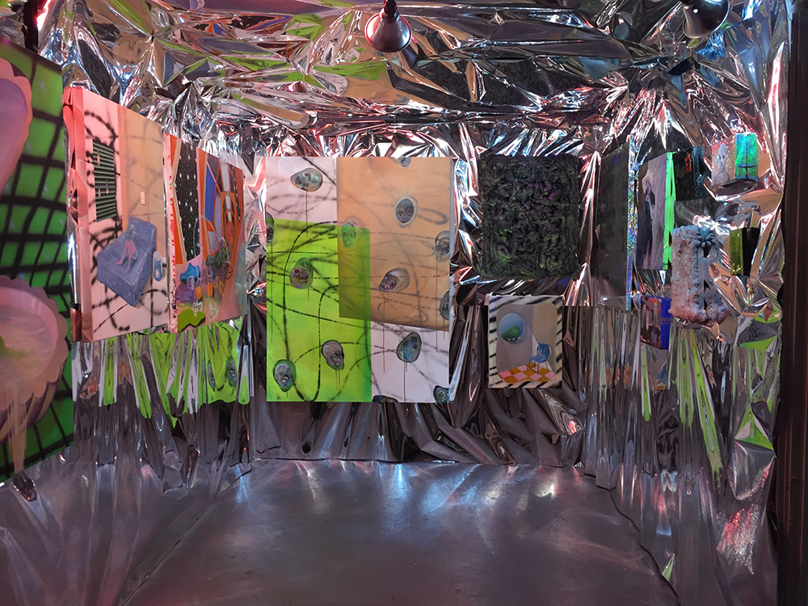
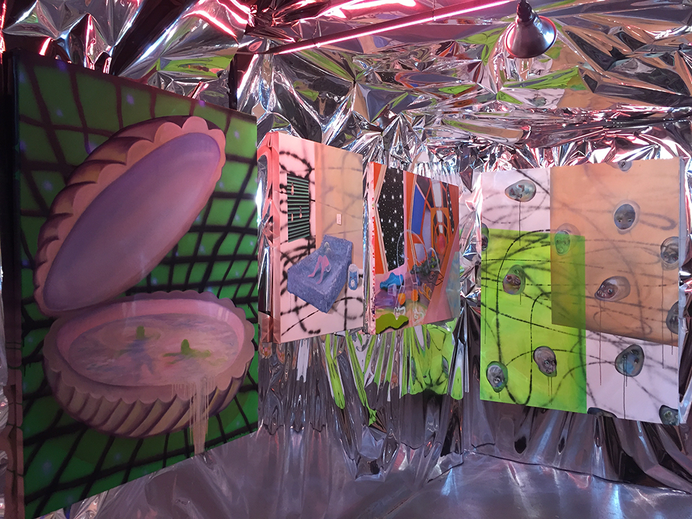

Cosmic Elevator: Rachael Senchoways work is based on the concept of other dimensions and what gliding through them might feel and look like. The space between life and death is virtually unexplored, Senchoway attempts to show peepholes into this abstract form of existence. As self awareness fades, traces of memory and flickering dreams may construct this new environment. What happens when you look down and your body is gone? Imagining these possibilities helps to connect oneself to a heightened sense of being alive, especially when the physical world is becoming uninhabitable.
 